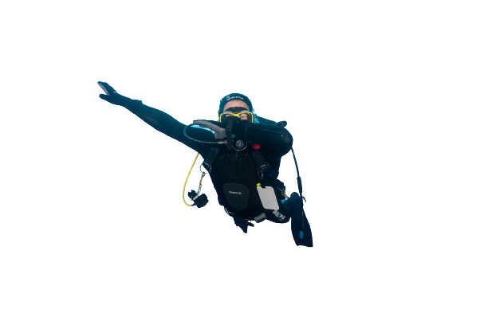

My name is Daniel Koren, im 33 years old, and live in kibutz magal.
I've always loved the sea, whether it's catching waves for hours with a boogie at the age of 6 or a sailing class at the age of 10,
but what grabbed me the most was the diving course at the age of 14 that started in magical Sinai and ended on the amazing beaches of Eilat.
After years of diving all along the shores of our beautiful country, I decided it was time to pack a bag and explore outside the borders of our country as well.
First destination Thailand to an island called Koh Tao where I did a course called Divemaster which is the first course in a training courses to become an instructor
and the duration of the course is a month and a half, which did not prevent me from continuing for another two months beyond the course on this magical island
that for 3 years in a row I returned to the island from January to April to meet friends
from all over the world
who like me, could not detach themselves from the magic that this island has to offer.
I started taking pictures because a friend that organizes diving trips said we flying to Mozambique to a fishing village called Tofo
to photograph a humpback whale
and since the friend is a great photographer, I was convinced that this is an excellent way to experience diving.
As luck as i could be, the trip also took place on my birthday, so I spoiled
Myself with a camera and a waterproof case
that allows scuba diving and the rest is history.
Since then I managed to dive in Mexico on an island far away from the coast, a full day of sailing away called Socorro to photograph
the magical great manta-ray, far far away but worth every second
of sailing because what happened
there kept only for the best dreams of every diver in the world.
Unfortunately, about a year after the trip to Mexico, the COVID-19 pandemic entered our lives, which luckily made me understand
until the next trip
Let's focus on what we have here in our small country, a few hours from our door, maybe a little traffic, but an infinite
charm that is very difficult to describe.
"The happiness of the bee and the dolphin is to exist. For man it is to know that and to wonder at it." - Jacques Yves Cousteau
